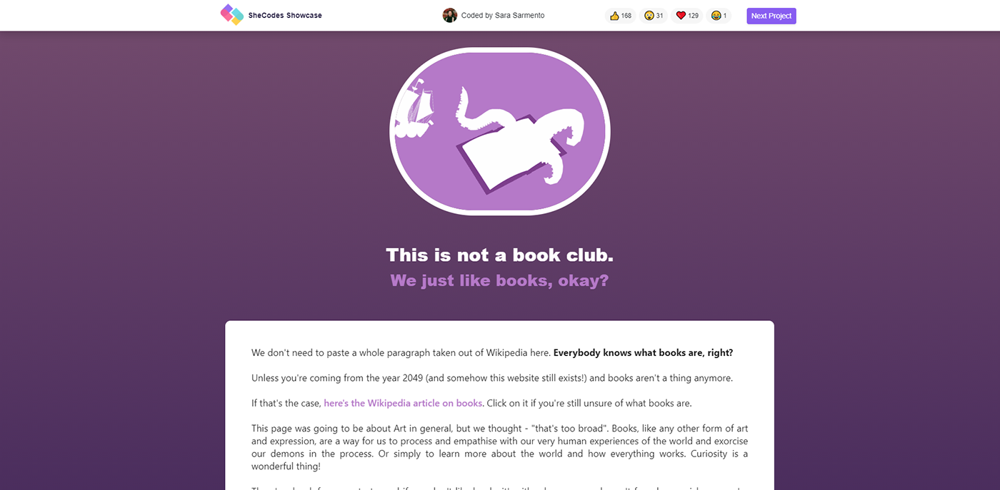
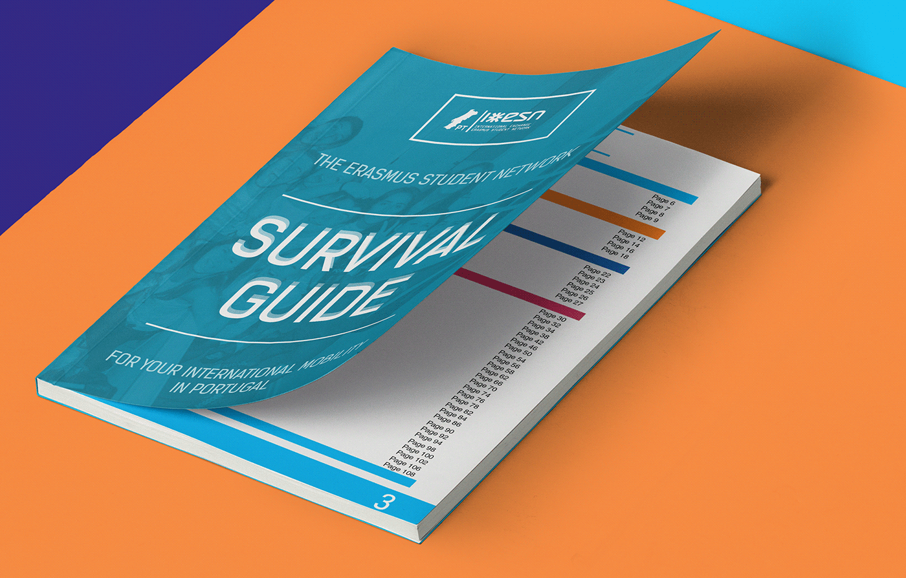

See it live

Every year, Erasmus students in Portugal receive a Survival Guide for free from the Erasmus Student Network Portugal ONG.
In 2015, I was put in charge of redesigning the whole guide in Adobe InDesign, including the cover, maps, and all images you can see below (except the logo and pictures). The idea was to make it more in line with the international Erasmus Student Network design branding, while also making it personal to the national level.
Here you'll be able to read it fully.
In 2015, I was put in charge of redesigning the whole guide in Adobe InDesign, including the cover, maps, and all images you can see below (except the logo and pictures). The idea was to make it more in line with the international Erasmus Student Network design branding, while also making it personal to the national level.
Here you'll be able to read it fully.